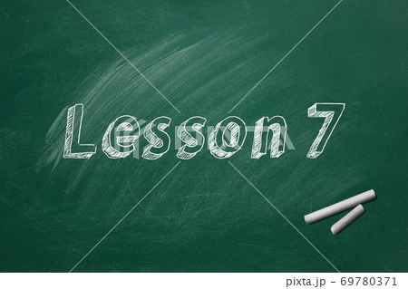

おすすめ
【ComⅡ】Lesson7-全パート和訳 重要表現
【ComⅡ】Lesson7-全パート和訳 重要表現
宮田師の訳を文字起こししたものです。もしもミスがあった場合は教えて下さい。
バイオミミクリーはよい意識をすることを助け、私たちの自然を私たちの生活様式を変えるかも知れないとベニスは信じている。私たちは永遠に自然を利用し続けることはできないし、自分たちのゴミを私たちお環境に捨て続けることもできないのである。
私たちは長い間技術革新が自分たちにとって役に立つかどうか。あるいは、技術革新がお金になるかで判断してきた。私たちは地球全体に役に立つことをまず第一に考え、それが私たち人間にどのようにやくだつのか信じるべきだとベニスは提案している。それは地球と未来の世代にどんなものを犠牲や損失としてもたらすことになるだろうか。
バイオミミクリーは私たちに将来に重要な役割を果たす強力な手段である。大昔には大変広い大きな世界の中にほんの僅かの人間しかいなかった。私たち人間の人口は急激に増加し、私たちの環境に悪影響を与えている。私たちはついには、私たちはどのようにしてふるさとの惑星を破壊することなく住むことができるのか。バイオミミクリーは自然に対する私たちの新しい見方だけならず、私たちは地球上での生活を学ばならなければいけない。地球は私たちのふるさとですが、私たちだけのものではないのである。
定期テストでの本文穴埋めはこの中から出題されます。訳と合わせて要確認。
・have a bad effect on